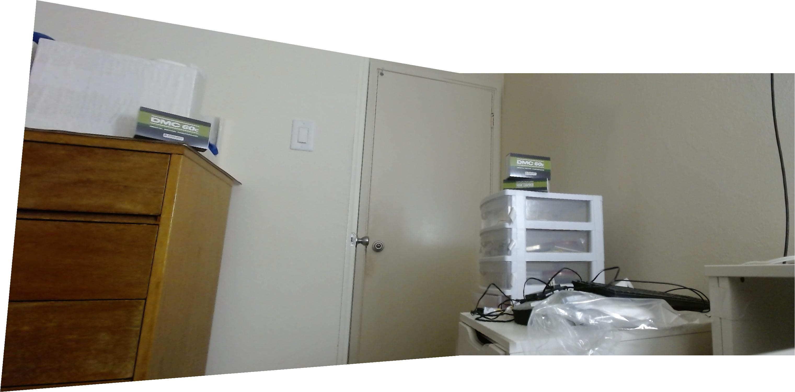

Shooting pictures
I mostly just took pictures around Berkeley's campus and my own apartment at like 3am lmao An issue i ran into early on was actually just having too little overlap between images, as this ended up in projections (down the line) that were too large to be renderable.
{kind=link}
{kind=link}
{kind=link}
{kind=link}
{kind=link}
{kind=link}
{kind=link}
Defining homographies
We take the homography transform equation:
And algebraically manipulate it into a linear equation for a...h that we can then throw into a linear least squares solver:
Had I more time, I would've liked to try and experiment with modifications on least squares, such as a way to weight certain keypoints over other keypoints as not all keypoints yield better images due to selection noise. Or perhaps other techniques such as ridge regression or lasso. I don't remember enough of 189 though.
Warping the images
Keypoint selection
I generally found that it was best to start with the minimal four points, and then slowly add points to get the images to align better, and remove points if they caused issues. Displayed is a labelled pair of 13 correspondences I used later:
{kind=link}
{kind=link}
Rectified images
I decided to first rectify a DMC 60c box from the first four keypoints from the left image above. The DMC60c was a series of brushed motor controllers made by Digilent best known for being discontinued as they were sued by another manufacter who alleged that they had stolen the firmware.
| oops |
{kind=link}
I then did a label on a trashcan outside of Li Ka Shing. Waste free in ${YEAR}+1, I suppose.
{kind=link}
Blending images into mosaics
My room
| Image 1. | Image 2. | Image 3. |
I had two different approaches for stitching together an img2 onto an img1. There was a naive approach that just found the overlap intersection between the two images, and within that intersection, just averaged the two images together (the "naive" merger.) This worked okay but has an issue of having really noticable seams at image overlap boundaries.
There also existed a more sophisticated approach (the "antiseam" merger) that would try to resolve these seams, which generally lets img2 overwrite most of the overlap intersection, but near the edge between the space of only img1 and the intersection, would create a gradient using a bwdist-like method to give a more smooth transition. This does have the downside of being somewhat less able to make differences in lighting less noticable (as image 3 in my room has different lighting.) In general, this approach yields more aesthetically pleasing results, though.
Presented is a comparison of the techniques, for two images, and three images stitched together. The stitcher can do arbitrary numbers of images.
{kind=link}
{kind=link}
{kind=link}
{kind=link}
{kind=link}
| 2 images, naive blending. | 2 images, antiseam blending. |
| 3 images, naive blending. | 3 images, antiseam blending. |
{kind=link}
{kind=link}
{kind=link}
{kind=link}
Outside Li Ka Shing
(Probably should've had more overlap lol)
| Image 1. | Image 2. |
| Merged image | |
{kind=link}
Outside VLSB and Dwinelle
| Image 1. | Image 2. |

|
|
| Merged image | |
Turns out if you have trees in your image, you're likely going to get ghosting when those things move slightly.
Learning outcomes:
I hate selecting keypoints. I wish there was a way to automate this (there is, but not in proj4a). Also, homography transforms really do have all the limitations inherent to least squares, such as sensitivity to outliers, etc. When you don't really know what you're doing, your code gets really messy really quickly. My code is a mess. I barely understand it myself as is. I now understand more greatly how "academia code" gets written as a result.
Bells and Whistles....????
My room is pretty barren, as you can probably see above. How can we fix this?
| Instant improvement. |
{kind=link}
Proj4B: Autostitching
Harris interest point detector
We first detect all the Harris corners in an image at single-scale, using the provided implementation.
| There's a lot of points.. |
{kind=link}
Adaptive non-maximal suppression
For each harris point p1, we take the distance to the nearest point p2 (if any) where the harris strength h(p1) < 0.9*h(p2) and this is the "radius" associated with the point. We take the top 500 points with the largest radii as the points we use. This allows for candidate points scattered across the image.
| Adaptive non-maximal suppression points. |
{kind=link}
Feature descriptor extraction
We then extract the features from sampling from a 40x40 px range around each point (with 5px spacing) to get a 64-dimensional "feature descriptor". A visualization of what that looks like on one of the feature points is shown below.
| The feature sampling area (yellow) around a point (red). | The 40x40 grayscale patch that we sample from | The low-freq downsampling into a 8x8 normalized feature descriptor. |
{kind=link}
{kind=link}
{kind=link}
Feature matching using the Lowe ratio
We then try to match various feature descriptors using SSD. We record their nearest neighbor error and second-nearest neighbor error. We then filter for point correspondences with a squared Lowe ratio (err_1nn / err_2nn)^2 < 0.6. These form the candidate points from which RANSAC draws from.
| Lowe-ratio filtered correspondences for im1. | Lowe-ratio filtered correspondences for im2. |
{kind=link}
{kind=link}
RANSAC Homographies
The process of RANSAC goes something like:
- select four feature pairs from the lowe-filtered candidates
- compute the exact homography on those pairs
- find the inliers where dist(rpts1, H @ rpts1) < epsilon = 3
- repeat steps 1-3 about 10,000 times
- keep the largest set of inliers found in the iterations above and use it for least-squares homography in stiching.
| RANSAC-selected points for im1. | RANSAC-selected points for im2. |
{kind=link}
{kind=link}
Autostitching mosaics
The hand-selected points do a little better, especially on the apartment where there aren't many corners on the door/lightswitch, but are largely comparable/admissible on the vlsb and likashing image pairs. To be fair to the autostitcher, a lot of the hand-selected keypoints were selected specifically to make the image stitch better visually. The autostitcher does an admirable job though.
|  | |
| Proj4a hand-selected apartment. | Autostitched apartment. |
 |
|
| Proj4a hand-selected likashing. | Autostitched likashing. |
| |
|
| Proj4a hand-selected vlsb/dwinelle. | Autostitched vlsb/dwinelle. |
{kind=link}
{kind=link}
Learning outcomes
RANSAC is pretty cool! I did not expect all of this to work so well on so many assumptions.
You made it to the end! yay!